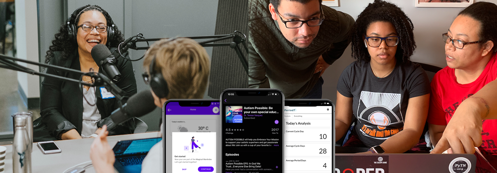

Dr.T / README.md

"I hold a master’s degree in business administration and a doctorate of education with an emphasis in assistive technology and adult education. My passion is studying how user and business needs collide into amazing opportunities for designers, developers, and users and how this collaborative relationship can inspire creativity and innovation. Especially for autistic users in the Black community."